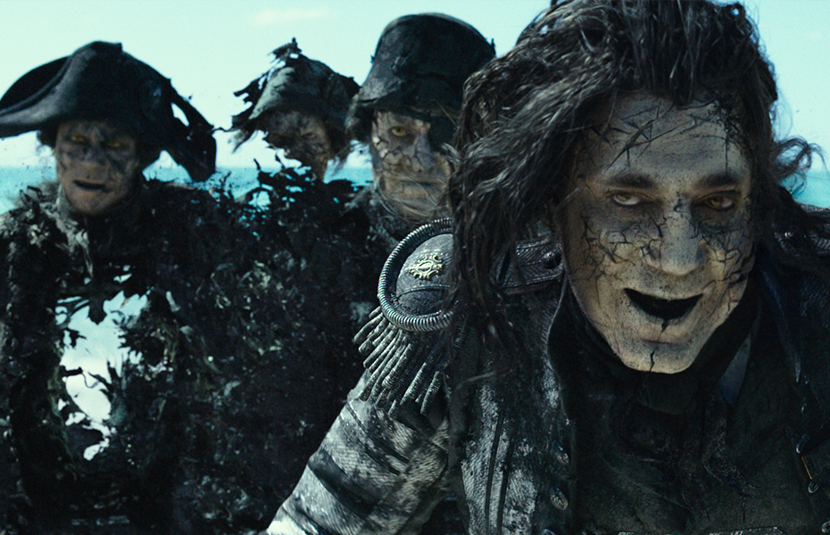

Pirati s Kariba:
Salazarova osveta (Pirates of the Caribbean: Dead Men Tell No Tales) je pustolovni
pomorski ep, peti u Disneyevom filmskom serijalu Pirati s Kariba. Redatelji filma su Joachim Rønning
i Espen Sandberg, scenarij je napisao Jeff Nathanson, a producent je i u ovom nastavku Jerry Bruckheimer.
Kao i u prethodnim nastavcima, glavnog lika kapetana Jacka Sparrowa utjelovio je Johnny Depp, a u ostalim
ulogama pojavljuju se Javier Bardem, Brenton Thwaites, Kaya Scodelario, Kevin McNally i Geoffrey Rush.
U filmu se također ponovno pojavljuju Orlando Bloom i Keira Knightley kao Will Turner i Elizabeth Swann,
nakon izbivanja iz prethodnog filma.
Salazarova osveta je prikazan u standardnim, Disney Digital 3-D, RealD 3D i IMAX formatima na dan 26.
svibnja 2017. godine, točno deset godina i jedan dan od početka prikazivanja trećeg nastavka, Na kraju
svijeta. Kritike su bile pomiješane, hvalile su se glumačke izvedbe (pogotovo Bardemova), efekti, glazba
i kraće trajanje filma, a kritizirala se komplicirana radnja filma, dok neki kritičari smatraju film
boljim od prethodnika. Film je ukupno zaradio 794 milijuna dolara u svijetu, a to je drugi najlošiji
utržak u serijalu i deseti najbolji u 2017. godini.

Radnja filma: Dvanaestogodišnji Henry Turner se ukrcao na Letećeg Holandeza da bi obavijestio svojeg oca,
Willa Turnera, da kletva koja ga obvezuje da plovi Holandezom i dozvoljava mu da samo jednom u deset
godina smije stupiti na kopno, može biti prekinuta uz pomoć Posejdonovog Trozupca. Henry namjerava
zatražiti pomoć od Jacka Sparrowa u pronalaženju Trozupca, ali Will smatra da je to nemoguća misija
i naređuje Henryju da otiđe s broda. Potom Will i Holandez nestanu u moru, ali je Henry i dalje odlučan
u svojoj namjeri pronalaženja Sparrowa i Trozupca. Devet godina kasnije, Henry je mornar u britanskoj
kraljevskoj ratnoj mornarici. Brod uplovljava u vode Bermudskog trokuta i nalijeće na olupinu broda
Tiha Mary, čija ih posada sastavljena od duhova predvođenih španjolskim lovcem na pirate, kapetanom
Salazarom, napada. Salazar pošteđuje život Henryju kako bi prenio poruku Sparrowu da on dolazi po njega.
Na Svetom Martinu, mlada astronomkinja i urologinja imena Carina Smyth je osuđena na smrt zbog
vještičarenja, ali uspijeva pobjeći i nakratko se susretne sa Sparrowom i njegovom posadom koja je
neuspješno opljačkala banku. Nakon godina provedenih u zloj sreći, posada izgubi vjeru te napušta Sparrowa. U depresiji, Sparrow mijenja svoj magični kompas za piće. Međutim, izdaja kompasa oslobađa kapetana Salazara i njegovu posada iz Bermudskog trokuta. Carina shvati da Henry traga za Trozupcem te mu ponudi pomoć u vidu korištenja dnevnika kojeg je dobila od nepoznatog oca. Carina i Sparrow su uhvaćeni i prijeti im pogubljenje, ali su spašeni od strane Henryja i Jackove posade te isplovljavaju na Umirućem galebu. Carina dešifrira znakove te će pomoću zvijezda naći otok gdje je Trozubac skriven.
U međuvremenu, kapetan Barbossa čuje od svoje piratske posade da oslobođeni Salazar ubija pirate na moru
te shvaća da bi ga Trozubac mogao odvesti do novih bogatstava. Barbossa kreće u potragu za Trozupcem,
sve dok ne naleti na Salazara koji sa svojom posadom uništava Barbossinu flotu. Barbossa se govorom, u
kojem ponudi pomoć u pronalaženju Jacka Sparrowa, izvlači od sigurne smrti. Salazar se složi s tim,
želeći osvetu nad piratom koji je odgovoran za njegovu smrt. Salazar slijedi Umirućeg galeba te tako
prisiljava Sparrowa, Carinu i Henryja da spas potraže na otoku, koji tada shvate da Salazar i njegova
posada ne mogu stupiti na kopno. Nakon spašavanje Sparrowa iz dogovorenog braka, Barbossa se udružuje
sa Sparrowom, vraća mu kompas i vraća minijaturni Crni biser, kojeg je u bocu zarobio Crnobradi, u
njegovu prirodnu veličinu. Sada svi nastavljaju putovanje do otoka s Trozupcem, pod zapovjedništvom
kapetana Barbosse, koji tako još jedanput preuzima zapovjedništvo nad Crnim biserom. Tijekom putovanja,
Sparrow i Barbossa shvate da je Carina Barbossina davno izgubljena kći. Barbossa govori Sparrowu da ju
je ostavio u sirotištu s dnevnikom, kako bi imala bolji život te joj odbija reći istinu kako bi ona i
dalje vjerovala da joj je otac bio astronom. Prilazeći Trozupčevom otoku, Biser izbjegava susret s
britanskim ratnim brodom, koji je uništen u sukobu s Tihom Mary prije nego li se Crni biser nasuče na
otok. Sparrow, Barbossa i Carina iskoriste moć otoka da rastvori ocean i stvori put do Posejdonova
Trozupca preko oceanskog dna. Salazar zarobljava Henryja i demonski zaposjedne njegovo tijelo kako bi
mogao hodati po oceanskom dnu i uzeti Trozubac. Kada uspije, Henry dobiva svoje tijelo natrag i odlučuje
uništiti Trozubac kako bi raskinuo sve morske kletve i vratio Salazarovu posadu natrag u život. Međutim,
razdvojeno more se počinje urušavati. Crni biser spusti sidro da bi ih vratio na sigurno, ali ih Salazar
slijedi, odlučan u namjeri da se osveti Sparrowu. Carina shvati da je Barbossa njen otac te primijeti
tetovažu na njegovoj ruci koja je identična onoj na naslovnici dnevnika. Barbossa se potom žrtvuje
da ubije Salazara, kako bi ostalima omogućio bijeg na sigurno. Nakon nekog vremena, Henry i Carina se
nađu u Port Royalu, gdje se pojavi Will, oslobođen svoje obaveze na Letećem Holandezu. Njegova žena,
Elizabeth, pojavi se nakon nekoliko trenutaka tako da se obitelj Turner ponovo okupila. Henry i Carina
također postaju par. Jack Sparrow sve to gleda sa svojeg Bisera s dozom gađenja, nakon čega otplovi u
horizont te je ponovo prihvaćen od svoje posade kao kapetan. U post-credit sceni, Will i Elizabeth spavaju
u svom krevetu zajedno, kada im se u sobi pojavi oživljeni Davy Jones. Will se probudi i vidi da nema
nikoga u sobi. Pretpostavljajući da je pojavljivanje Jonesa bila samo noćna mora, Will se vrati na
spavanje, nesvjestan postojanja nekoliko školjki u lokvi na podu te je tako otkriveno da to nije bila
noćna mora i da je Davy Jones stvarno živ.